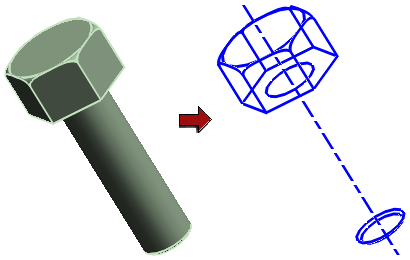

新建引用集
本示例将展示如何创建用户定义引用集，以简化标准件显示并改善计算机性能。
-
在装配导航器中，右键单击将拥有该引用集的组件或子装配，然后选择设为显示部件。
-
通过抽取要显示在该引用集中的必要曲线、点或片体来准备部件。
-
选择格式→引用集。
-
在引用集对话框中，单击添加新的引用集
 。
。
-
在引用集名称框中，键入简单。
-
(可选)在设置组中选中自动添加组件复选框，以便在创建新组件时自动将其添加到引用集。
-
在图形窗口中选择对象，直到在引用集中包含所需的所有对象。
-
单击关闭。
